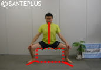
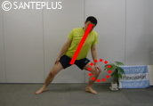
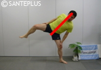
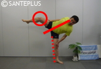
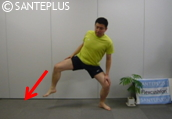

|  |
| 腰割りの姿勢から。足首は外に45～50度。「長方形」ができるようなイメージ。顎を引き上目使い。3m先を見る。上体の力を抜き、手を膝の上に。＊初級者は足幅を狭くし「ひし形」でOKです！ |
|  |
|
軸足に体重を移し、反動を使わず軸足の膝を伸ばすことで、自然に反対の脚が上がる。ずっと息を吸いながら。＊「足を上げる」という意識はゼロ。＊四股は「片足スクワット」の感覚です。 「腰割り」の姿勢。すなわち「腰が入った」（＝骨盤と脊柱が真っ直ぐor少し骨盤前傾な）状態。膝とつま先は同じ方向。上体＆肩の力を抜き、手を膝の上に軽く置く。脇は締めて。ヒジから少し外側へ |
|  |
| 軸足の徐々に膝を伸ばすことで、自然に反対側の足がゆっくり上がる。体の軸（首・脊柱のライン）は常に真っ直ぐ。ヘソを中心にした時計の針が周るように傾いていく感覚。股関節は開いたまま。 |
|  |
| 軸足の膝を99％伸ばす。股関節周辺（内転筋）が自然にストレッチされる。可能であれば、上で１秒静止。グラつかないようバランスを取って。体の軸は常に真っ直ぐ。上がっている足の膝は曲がっていてOK。太腿は外旋キープ。 |
|  |
| 息を吐きながら脚が下がる。軸足の膝をゆっくり曲げることで下ろすスピードと体をコントロール。つま先から着地、強く踏む。その際、シュッと息を吐き切る。着地の際、外側に5cm程、足の指先を滑らせながら。 「腰割り」の姿勢。すなわち「腰が入った」（＝骨盤と脊柱が真っ直ぐor少し骨盤前傾な）状態。膝とつま先は同じ方向。上体＆肩の力を抜き、手を膝の上に軽く置く。脇は締めて。ヒジから少し外側へ |
|
最初の「腰割り」ポジションに。つま先と膝は同じ方向を向ける。
最初に戻り、反対側の脚で。 左右交互に。 オススメ＝毎日20～30回程度。初級者は「足幅狭く」「10回」でOK。 |